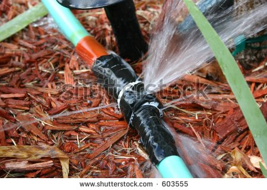

"DON'T MAKE A MOVE!" Fred exclaims. Get over there and stand against the wall. How dare you climb into my house!
The kids are starled and do what he says. The girl says, "Please don't tell her we are here."
Fred learns that the children live down the block and were running away from their older sister in an elaborate game of hide and seak. He informs their parents of their misbehavior. The kids are punished and he never hears from them again.
However, because he was such a kill joy the children continue to prank him and he never can figure out why his garden hose, garage door opener, outside lights and sprinklers never really work after that night.
THE END
